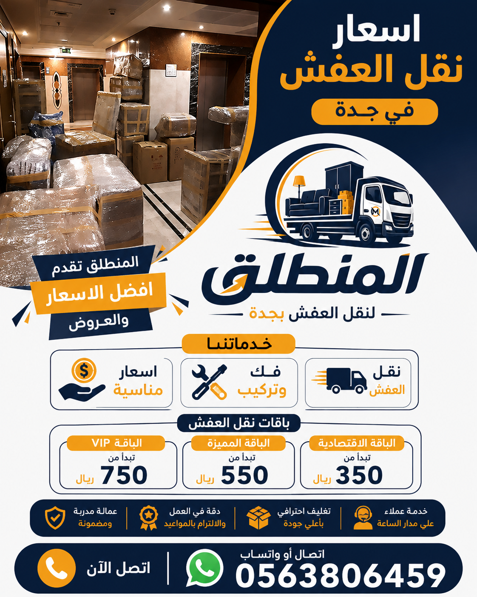

أسعار نقل العفش في جدة تبدأ من 200 ريال للنقل داخل الحي. شركة نقل عفش جدة المنطلق تقدم أفضل الأسعار مع خدمة ممتازة. تعرف على اسعار نقل العفش بجدة حسب عدد الغرف والخدمات المطلوبة من أفضل شركة نقل عفش جدة. نقل عفش بجدة معنا يعني جودة عالية وأسعار مناسبة.
تعتبر اسعار نقل العفش في جدة من أكثر الأمور التي يبحث عنها العملاء عند التخطيط للانتقال. تختلف اسعار نقل العفش بجدة حسب عدد الغرف وحجم الأثاث. على سبيل المثال، نقل عفش شقة غرفة نوم واحدة تبدأ تكلفته من 200 إلى 350 ريالاً شاملاً النقل فقط. أما اسعار نقل عفش شقة غرفتين فتبدأ من 350 إلى 550 ريالاً. اسعار نقل عفش شقة 3 غرف تتراوح بين 550 و 800 ريال حسب المسافة ووجود مصعد. بينما اسعار نقل عفش فيلا صغيرة 4 غرف تبدأ من 1000 ريال وقد تصل إلى 1500 ريال للخدمة الشاملة. شركة نقل عفش جدة المنطلق تقدم أفضل الأسعار مع ضمان الجودة. أفضل شركة نقل عفش جدة هي التي تقدم سعراً شفافاً بدون رسوم خفية. نقل عفش بجدة مع شركة المنطلق يعني الحصول على عرض سعر دقيق ومجاني. نقل عفش في جدة أصبح الآن أسهل وأرخص مع عروضنا الحصرية. شركات نقل عفش في جدة كثيرة لكن شركة المنطلق هي الأفضل من حيث السعر والخدمة. فك وتركيب العفش بجدة يمكن إضافته مقابل رسوم إضافية بسيطة. للحصول على عرض سعر دقيق لممتلكاتك، اتصل بنا الآن وسنرسل مندوباً لتقييم العفش مجاناً. اسعار نقل العفش بجدة التي نقدمها تنافس جميع الشركات الأخرى. نقل عفش بجدة معنا يوفر لك ما يصل إلى 30% من التكلفة مقارنة بالشركات الأخرى. شركة نقل عفش جدة المنطلق هي الخيار الاقتصادي الذكي. أفضل شركة نقل عفش جدة تضع أسعاراً تنافسية تناسب الجميع. فك وتركيب العفش بجدة متاح بسعر رمزي. نقل عفش في جدة مع شركة المنطلق يضمن لك راحة البال. شركات نقل عفش في جدة كثيرة لكننا الأرخص والأفضل.

تختلف اسعار نقل العفش داخل جدة حسب المسافة بين الأحياء. إذا كنت تنتقل داخل نفس الحي، فإن اسعار نقل العفش في جدة تبدأ من 200 ريال. أما إذا كانت المسافة بين الأحياء تزيد عن 10 كيلومترات، فقد تزيد التكلفة بنسبة 20-30%. نقل عفش من حي الصفا إلى حي النزهة مثلاً قد يكلف حوالي 300-400 ريال. نقل عفش في جدة بين الأحياء البعيدة مثل من جنوب جدة إلى شمالها قد يصل إلى 500-700 ريال. شركة نقل عفش جدة المنطلق تحدد السعر بناءً على المسافة الفعلية وكمية الأثاث. أفضل شركة نقل عفش جدة هي التي توفر شفافية في التسعير. نقل عفش بجدة معنا يتضمن معاينة مجانية لتحديد السعر النهائي. شركات نقل عفش في جدة عادة ما تفرض رسوم إضافية على المناطق البعيدة، لكننا نقدم أسعاراً ثابتة بدون مفاجآت. فك وتركيب العفش بجدة يتم حسابه بشكل منفصل أو ضمن باقة شاملة. اسعار نقل العفش بجدة التي نقدمها تشمل تحميل وتنزيل العفش. شركة نقل عفش جدة رخيصة ولكنها محترفة. من نحن يمكنك معرفة المزيد عن تاريخنا في تقديم أرخص الأسعار. الصفحة الرئيسية تعرض أحدث عروضنا. ننصح بالاتصال بنا للحصول على عرض سعر دقيق لمنطقتك، لأن اسعار نقل العفش في جدة تختلف حسب الطلب الموسمي. في مواسم الانتقال (الصيف والإجازات) قد ترتفع الأسعار قليلاً، لكننا نحافظ على أسعارنا تنافسية. شركة نقل عفش جدة المنطلق تقدم خصماً خاصاً للحجوزات المبكرة قبل أسبوعين من تاريخ النقل. دينا نقل عفش بجدة بأحجام مختلفة تناسب ميزانيتك.
تعد خدمة فك وتركيب العفش من الخدمات الأساسية التي يطلبها العملاء عند الانتقال. تختلف اسعار فك وتركيب العفش في جدة حسب نوع القطعة وتعقيدها. فك وتركيب غرفة نوم كاملة تتكون من سرير وخزانة ملابس وتلفزيون يكلف حوالي 150-250 ريالاً. فك وتركيب مجلس عربي كبير قد يكلف 100-180 ريالاً. فك وتركيب العفش بجدة مع شركة المنطلق يتم بواسطة نجارين محترفين ذوي خبرة. شركة نقل عفش جدة التي تقدم هذه الخدمة بأسعار رمزية. أفضل شركة نقل عفش جدة تجمع بين النقل والفك والتركيب. نقل عفش بجدة مع الفك والتركيب يوفر عليك عناء البحث عن نجار منفصل. شركات نقل عفش في جدة تختلف في أسعار خدمات الفك والتركيب، لكننا نقدم أقل الأسعار. نقل عفش في جدة مع فك وتركيب المطابخ يتطلب دقة عالية، ونحن نقدمه بسعر 200-350 ريالاً للمطبخ المتوسط. اسعار نقل العفش بجدة تشمل الفك والتركيب عند اختيار الباقة الشاملة. خدماتنا تشمل فك وتركيب جميع أنواع الأثاث. مدونة فك وتركيب الأثاث تقدم نصائح مفيدة. نقل عفش بجدة مع فك وتركيب من شركة المنطلق يضمن لك إعادة التركيب بنفس الجودة. شركة نقل عفش جدة المنطلق تقدم ضماناً على أعمال الفك والتركيب لمدة 30 يوماً. نقل العفش مع التغليف والفك والتركيب باقات شاملة بخصم 15%. احجز الآن ووفر المال.
تغليف العفش هو خطوة أساسية لحماية الأثاث من الخدوش والكسر أثناء النقل. اسعار تغليف العفش في جدة تعتمد على عدد القطع والمواد المستخدمة. تغليف غرفة نوم كاملة بالبلاستيك الفقاعي والكرتون يكلف حوالي 80-150 ريالاً. تغليف كنبة صالة 3 قطع يكلف 60-100 ريال. تغليف العفش بجدة مع شركة المنطلب يتم باستخدام مواد عالية الجودة. شركة نقل عفش جدة التي توفر التغليف بسعر منخفض. أفضل شركة نقل عفش جدة تقدم خدمة التغليف كجزء من الباقة الشاملة. نقل عفش بجدة مع التغليف يضمن لك وصول الأثاث بحالة ممتازة. نقل عفش في جدة بدون تغليف قد يعرض أثاثك للخطر. شركات نقل عفش في جدة تختلف في أسعار التغليف، لكننا نقدم الأفضل. اسعار نقل العفش بجدة تشمل التغليف عند اختيار الخدمة المتكاملة. مدونة تغليف العفش تشرح أهمية التغليف الاحترافي. نقل العفش مع التغليف خصم خاص. اتصل بنا للحصول على عرض سعر لتغليف منزلك بالكامل. نقل عفش بجدة مع تغليف احترافي من شركة المنطلق يحمي الأجهزة الإلكترونية والمرايا. شركة نقل عفش جدة التي تهتم بتفاصيل التغليف. الرئيسية تعرض عروض التغليف المجاني أحياناً. لا تتردد في الاستفسار عن خدمة التغليف عند حجز دينتنا.
تختلف اسعار نقل العفش من جدة إلى المدن الأخرى حسب المسافة وحجم الأثاث. نقل عفش من جدة إلى مكة المكرمة تبدأ أسعاره من 600 ريال لشقة صغيرة، وقد تصل إلى 1200 ريال لفيلا كبيرة. نقل عفش من جدة إلى المدينة المنورة يبدأ من 800 ريال. نقل عفش من جدة إلى الرياض تبدأ أسعاره من 1500 ريال حسب كمية الأثاث. شركة نقل عفش جدة المتخصصة في النقل بين المدن. شركة نقل عفش جدة المنطلق توفر سيارات مجهزة للرحلات الطويلة. أفضل شركة نقل عفش جدة التي تقدم أسعاراً ثابتة للنقل بين المدن. نقل عفش بجدة إلى الدمام يبدأ من 1800 ريال. نقل عفش في جدة إلى الطائف يبدأ من 700 ريال. شركات نقل عفش في جدة التي تقدم خدمة النقل بين المدن قليلة، لكننا الأفضل. اسعار نقل العفش بجدة تشمل أيضاً النقل إلى أبها وجازان. نقل عفش في جدة والبعد عنها. من نحن نعرف كيف ننقل أثاثك بأمان لمسافات طويلة. اتصل بنا للحصول على عرض سعر للنقل بين المدن. ننصح بحجز الخدمة قبل أسبوع على الأقل للرحلات البعيدة. نحن نقدم تأميناً على الأثاث أثناء النقل بين المدن بتكلفة إضافية رمزية.
خدمة ونش رفع العفش هي الحل الأمثل للأثاث الثقيل أو المنازل التي لا يوجد بها مصعد. اسعار ونش رفع العفش في جدة تبدأ من 250 ريال للساعة الواحدة، وتشمل سيارة ونش وفنيين متخصصين. رفع خزانة ملابس كبيرة قد يستغرق ساعة واحدة فقط. شركة نقل عفش جدة التي توفر ونشاً حديثاً بأرخص الأسعار. أفضل شركة نقل عفش جدة التي تمتلك معدات رفع متطورة. نقل عفش بجدة بواسطة الونش يوفر عليك تعب فك الأثاث. نقل عفش في جدة للأدوار العليا أصبح سهلاً مع خدمتنا. شركات نقل عفش في جدة تختلف في أسعار الونش، لكننا نقدم أقل الأسعار. اسعار نقل العفش بجدة تشمل الونش كخدمة إضافية. دينات مجهزة برافعة متوفرة لدينا. خدماتنا تشمل ونش رفع للبيانو والخزائن الحديدية. مدونة دينات نقل العفش تشرح فوائد الونش. لا تتردد في طلب خدمة الونش إذا كان لديك أثاث ثقيل أو إذا كنت تسكن في دور مرتفع بدون مصعد. نحن نضمن لك رفع جميع محتويات منزلك بأمان تام دون أي أضرار للمبنى أو الأثاث. احجز الونش مسبقاً لضمان التوفر، خاصة في أيام الذروة.
إذا كنت بحاجة إلى تخزين عفشك لفترة مؤقتة بسبب التجديد أو السفر، فإن خدمة تخزين العفش هي الحل الأمثل. اسعار تخزين العفش في جدة تبدأ من 40 ريالاً للمتر المكعب شهرياً. تخزين محتويات شقة غرفتين (حوالي 20 متراً مكعباً) يكلف حوالي 800 ريال شهرياً. تخزين العفش بجدة مع شركة المنطلب يتم في مستودعات مكيفة ومؤمنة. شركة نقل عفش جدة التي تقدم خدمة التخزين بأسعار تنافسية. أفضل شركة نقل عفش جدة التي تمتلك مستودعات حديثة. نقل عفش بجدة مع التخزين باقة شاملة بخصم خاص. نقل عفش في جدة وتخزينه لاحقاً. شركات نقل عفش في جدة القليلة التي توفر تخزيناً آمناً. اسعار نقل العفش بجدة والتخزين معاً توفر عليك المال. اتصل بنا لمعرفة المساحة المتاحة. نقدم خصماً خاصاً للتخزين طويل الأجل (أكثر من 6 أشهر) يصل إلى 25%. جميع الأثاث المخزن يتم تغليفه وتوثيقه قبل وضعه في المستودع. يمكنك استلام عفشك في أي وقت تشاء، ونحن نعيد توصيله إليك بأسعار مخفضة. خدمة التخزين متاحة للأفراد والشركات على حد سواء.
إليك جدول أسعار نقل العفش في جدة محدث لعام 2026. هذه الأسعار تقريبية وقد تختلف حسب الظروف الخاصة بكل عميل. للحصول على عرض سعر دقيق، اتصل بنا الآن. الأسعار شاملة ضريبة القيمة المضافة.
| نوع الخدمة / حجم المنزل | السعر التقريبي (ريال) | الخدمات المشمولة | وقت التنفيذ |
|---|---|---|---|
| نقل شقة غرفة نوم واحدة | 200 - 350 | نقل فقط (تحميل + تنزيل) | 1-2 ساعات |
| نقل شقة غرفتين | 350 - 550 | نقل + تغليف أساسي | 2-3 ساعات |
| نقل شقة 3 غرف | 550 - 800 | نقل + تغليف + فك وتركيب | 3-5 ساعات |
| نقل فيلا صغيرة (4 غرف) | 1000 - 1500 | خدمة شاملة + فريق كامل | 5-7 ساعات |
| نقل فيلا كبيرة (5-6 غرف) | 1500 - 2200 | خدمة سوبر شاملة + فريقين | يوم كامل |
| نقل عفش من جدة لمكة | 600 - 1200 | نقل بين المدن + تحميل وتنزيل | نفس اليوم |
| نقل عفش من جدة للرياض | 1500 - 3000 | سيارة مغلقة + تغليف + تأمين | 1-2 يوم |
| فك وتركيب غرفة نوم | 150 - 250 | نجار محترف + أدوات | 1-2 ساعة |
| تغليف شقة بالكامل | 200 - 500 | بلاستيك فقاعي + كراتين | حسب الحجم |
| ونش رفع عفش (ساعة) | 250 - 400 | رافعة + فنيين | حسب الطول |
هل تبحث عن ارخص اسعار نقل العفش بجدة؟ إليك نصائح مهمة لتوفير المال. أولاً، قم بفرز وتنظيم العفش والتخلص من الأشياء التي لا تحتاجها – هذا يقلل من عدد الرحلات ويخفض التكلفة بنسبة تصل إلى 30%. ثانياً، قم بتفكيك الأثاث القابل للتفكيك بنفسك لتوفير رسوم النجارين. ثالثاً، احجز الخدمة في منتصف الشهر أو في غير مواسم الذروة (تجنب الصيف والإجازات). رابعاً، اطلب عروض أسعار من عدة شركات وقارن بينها، لكن تذكر أن شركة نقل عفش جدة المنطلق تقدم أقل الأسعار مع ضمان الجودة. خامساً، احجز الباقة الشاملة (نقل + تغليف + فك وتركيب) لأنها توفر عليك 15-20% مقارنة بطلب كل خدمة على حدة. مدونتنا تقدم نصائح إضافية لتوفير المال. نقل العفش مع التغليف خيار اقتصادي. الرئيسية تعرض أحدث الخصومات. لا تتردد في طلب المشورة المجانية من فريقنا قبل اتخاذ القرار. نحن نقدم معاينة مجانية وتقييماً للعفش بدون أي التزام. بهذه الطريقة، يمكنك معرفة التكلفة الدقيقة قبل البدء. أيضاً، اسأل عن عروض الشركات والعقود السنوية إذا كنت تنقل مكتباً. وأخيراً، احجز في أقرب وقت ممكن لتجنب أسعار الطوارئ.
تتميز شركة نقل عفش جدة المنطلق بتقديم أرخص أسعار نقل العفش في جدة لعدة أسباب. أولاً، نمتلك أسطولنا الخاص من الدينات والسيارات مما يقلل من تكاليف التأجير. ثانياً، لدينا عقود شراكة مع موردي مواد التغليف بأسعار الجملة. ثالثاً، نعتمد على كفاءة العمليات والتخطيط المسبق لتقليل وقت العمل. رابعاً، نحن نؤمن بأن العميل الراضي هو أفضل إعلان، لذلك نعمل بهامش ربح معقول. أفضل شركة نقل عفش جدة من حيث السعر هي التي تقدم قيمة حقيقية مقابل المال. نقل عفش بجدة معنا يعني أنك تدفع فقط مقابل الخدمات التي تحتاجها، لا شيء إضافي. من نحن نؤمن بالشفافية الكاملة. اتصل بنا لتجربة الفرق بنفسك. نحن نقدم ضماناً على الأسعار لمدة 30 يوماً – إذا وجدت شركة أخرى تقدم سعراً أقل لنفس الخدمات، سنقوم بمطابقة السعر. هذه هي الثقة التي نمتلكها في قدرتنا على تقديم أرخص الأسعار. بالإضافة إلى ذلك، نقدم عروضاً خاصة للطلبات الجماعية وللعملاء المتكررين. يمكنك قراءة تقييمات عملائنا السابقين على موقعنا والتي تؤكد أننا نقدم أفضل قيمة مقابل المال. لا تضيع المال على الشركات التي تفرض رسوماً خفية – اختر شركة المنطلق.
نقدم خدمات نقل المكاتب والشركات بأسعار تنافسية وبموجب عقود سنوية أو ربع سنوية. أسعار نقل مكاتب الشركات تعتمد على عدد الموظفين وحجم الأثاث. نقل مكتب صغير (5 موظفين) يكلف حوالي 500-700 ريال. نقل شركة متوسطة (20 موظفاً) يبدأ من 1500 ريال. نحن نعمل خارج أوقات الدوام الرسمي (ليلاً وفي عطلات نهاية الأسبوع) لضمان عدم تأثر إنتاجية شركتك. خدماتنا للشركات تشمل فك وتركيب المكاتب التنفيذية. شركة نقل عفش جدة المنطلق هي شريكك الموثوق. أفضل شركة نقل عفش جدة للقطاع التجاري. نقل عفش بجدة للمكاتب باحترافية. نقل عفش في جدة للشركات الكبرى. شركات نقل عفش في جدة المتخصصة في القطاع التجاري. اتصل بقسم المبيعات للحصول على عرض سعر خاص بشركتك. نقدم خصماً يصل إلى 20% للعقود السنوية. خدمتنا تشمل أيضاً نقل الخوادم والأجهزة الإلكترونية الحساسة بمواد تغليف خاصة. نضمن لك الحد الأدنى من تعطيل العمل، مع خطة نقل مدروسة مسبقاً. اطلب عرض سعر الآن لشركتك.
لا تتردد في طلب عرض سعر مجاني لمعرفة اسعار نقل العفش في جدة بدقة تامة. يمكنك الاتصال بنا على الرقم 0563806459 أو مراسلتنا عبر واتساب على نفس الرقم. سنرسل مندوباً لتقييم العفش مجاناً في الوقت المناسب لك، وسنقدم لك عرض سعر مكتوب وشفاف خلال 24 ساعة. شركة نقل عفش جدة المنطلق تنتظر اتصالك. أفضل شركة نقل عفش جدة التي تقدم معاينة مجانية. نقل عفش بجدة مع عرض سعر مسبق يوفر عليك المفاجآت. نقل عفش في جدة بأسعار تنافسية. شركات نقل عفش في جدة الأخرى تفرض رسوماً على المعاينة، لكننا نقدمها مجاناً. من نحن نضمن لك أفضل خدمة. اتصل بنا الآن واحصل على خصم 10% على أول خدمة. مدونتنا تقدم نصائح إضافية. الرئيسية تعرض آخر العروض. لا تتحمل أي التزام عند طلب المعاينة. نحن هنا لمساعدتك في الانتقال السلس والاقتصادي. اتصل الآن ووفر المال مع شركة المنطلق.
يبدأ من 550 ريال ويمكن أن يصل إلى 800 ريال حسب المسافة ووجود مصعد والخدمات الإضافية.
نعم، جميع أسعارنا المعلنة شاملة ضريبة القيمة المضافة 15%.
احجز خارج أوقات الذروة، ونظّم عفشك بنفسك، واختر الباقة الشاملة التي تقدم خصماً. اتصل بنا للحصول على أفضل عرض.
نعم، المسافة تؤثر على السعر. النقل داخل نفس الحي أرخص من النقل من جنوب جدة إلى شمالها.
تتراوح بين 1500 و 2200 ريال حسب كمية الأثاث والخدمات المطلوبة مثل التغليف والفك والتركيب.
نعم، نقدم خصماً خاصاً للشركات والمؤسسات التي تتعاقد معنا لعقود سنوية أو لنقل فروع متعددة.
يبدأ من 600 ريال لشقة صغيرة ويصل إلى 1200 ريال لفيلا كبيرة، حسب حجم الأثاث.
بالتأكيد، أرسل لنا صوراً أو فيديو للعفش على رقم 0563806459 وسنرسل لك عرض سعر فوري.
عدد الغرف، المسافة، وجود مصعد، كمية الأثاث، والخدمات الإضافية مثل التغليف والفك والتركيب.
لا، نحن نقدم عروض أسعار شفافة ومكتوبة قبل بدء العمل، ولا توجد أي رسوم إضافية غير متفق عليها مسبقاً.
تستغرق من 3 إلى 5 ساعات حسب كمية الأثاث ووجود مصعد وعدد العمال.
نعم، عند اختيار باقة التغليف الشاملة، يتم تغليف جميع الأجهزة الإلكترونية بمواد خاصة مضادة للصدمات.
تتراوح بين 200 و 350 ريالاً حسب حجم المطبخ وعدد الخزائن.
نعم، خدمتنا متاحة 24 ساعة طوال أيام الأسبوع بما في ذلك الجمعة والعطلات الرسمية.
يمكنك طلب معاينة من شركتين مختلفتين والمقارنة، لكننا نضمن لك أن أسعارنا هي الأكثر تنافسية مع ضمان الجودة.
لا تبحث كثيراً عن اسعار نقل العفش بجدة. شركة المنطلق تقدم لك أفضل سعر مع ضمان الجودة. اتصل الآن 0563806459 أو واتساب للحصول على عرض سعر فوري ومجاني. نقل عفش بجدة لم يكن أسهل وأرخص من قبل.